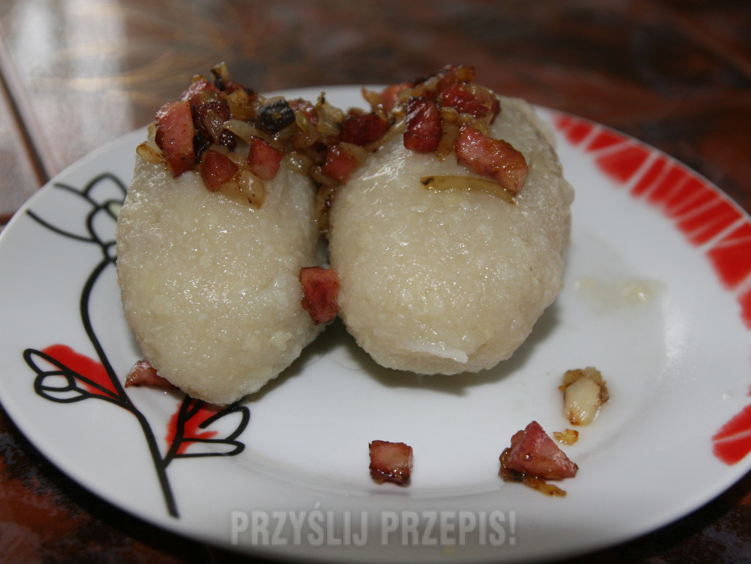

Kartacze

Description
Kartacz, także cepelin – potrawa regionalna, popularna w północno-wschodniej Polsce; rodzaj dużej, nadziewanej pyzy ziemniaczanej.
Gotowa kluska ma kształt owalny, w przekroju poprzecznym okrągły i długość od 10 do 12 cm albo od 8 do 10 cm.
Ingredients
- 2 kg surowych ziemniaków - waga po obraniu.
- 1 kg ugotowanych ziemniaków.
- 500 g mielonej łopatki wieprzowej.
- 2 średnie cebule - około 200 g.
- 2 łyżki mąki/skrobi ziemniaczanej.
- przyprawy: po płaskiej łyżeczce soli i majeranku; pół łyżeczki pieprzu.
Steps
- Starte ziemniaki odstaw na 10-15 minut, odciśnij z nadmiaru wody. Dodatkowo wytrąconą w sokach z ziemniaka skrobię zbierz i dodaj z powrotem do ziemniaków. Ugotowane ziemniaki przeciśnij przez praskę lub zmiel w maszynce. W misce połącz starte ziemniaki, ugotowane i zmielone ziemniaki oraz żółtka – wyrób jednolite ciasto.
- Cebulę pokrój w kostkę. Przygotuj mięsny farsz: na rozgrzanym oleju zeszklij pokrojoną cebulę (połowę cebuli zdejmij z patelni i odłóż na bok), dodaj mięso i smaż 5 minut, mieszając co chwilę. Następnie dodaj Bulionetkę wołową Knorr i bułkę tartą, wymieszaj. Farsz dopraw do smaku pieprzem oraz solą, jeśli uznasz to za konieczne.
- Przygotowane ciasto podziel na mniejsze porcje. Na każdy kawałek ciasta nałóż po łyżce farszu i zlep formując kartacze – podłużne kluski wielkości dłoni. Uformowane kartacze wkładaj do wrzącej, lekko osolonej wody z majerankiem, gotuj ok. 10 minut.
- Pozostałą, zeszkloną cebulę podgrzej i okrasz nią ugotowane, gorące kartacze.